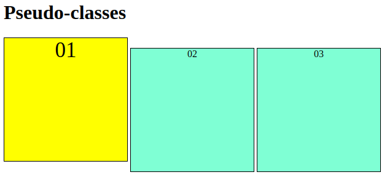

As Pseudo-classessão representadas no CSS por dois pontos ":".
As pseudo configurações servem para alterar o estado do elemento, por exemplo HOVER, quando aplicada, quando passamos o mouse por cima do elemento o mesmo se altera conforme formatado.
Veja como fica no CSS:
div:hover {
background-color: yellow;
font-size: 35px;
}
